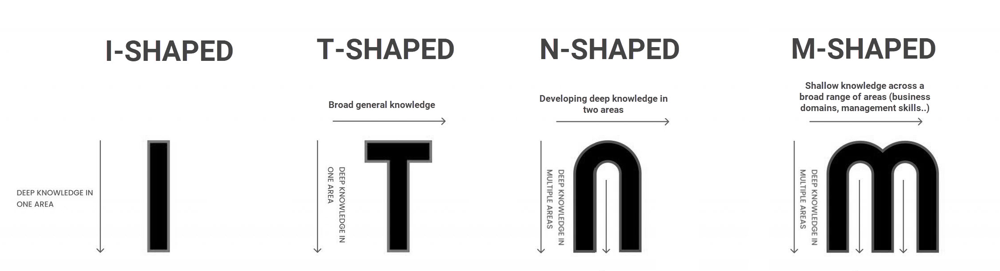

Clarity
Clarity is knowing exactly where you want to go, why you want to go there, and what hurdles you expect on the way. If you can’t write it down, you don’t have clarity.
What I’ve realised is that it is much less about how much you know about the landscape, and more about how little of the landscape you’re choosing to do. IE: subtraction. Which is obvious. Clarity means clearness; a river with a ton of crap in it is a polluted river, no matter if some of the crap is literal gold.
The Trap of “Polymathy” or “Generalists”
It’s becoming quite a common trap to become a “polymath.” The thing is, a polymath is someone who’s good, not mediocre, at multiple things. If you’re not good at one thing, you’re likely hiding behind the veil of polymathy to run away from commitment.
Commonly there are four types of individuals.

There is a fifth, which is a line: a person with broad general knowledge across multiple domains but no depth in any of them. This looks like you’re becoming a comb, but you’re really becoming a flatline. How do you prevent flatlining?
All-in
You travelled back in time. It’s 2013, bitcoin is just about to blow up. You know this. You want to make a lot of money—what are you going to do? Obviously, you’re going to go all the way fucking in. Because you’re 100% sure of a success. You’re going to put all your eggs in one basket.
Bill Ackman doesn’t have a time machine, yet he goes all in anyways, and yes, it means he sometimes loses. But that’s okay. If you have clarity, if you know exactly what you’re thinking, then it makes no sense to not put everything on the bet.
I have a very simple idea. It’s not very unique either. Robot deployment in the next 10 years will be massive: a million times what it is right now. We’re going to see 90% automation in nearly every country. The best right now is 66%. It’s bound to be a multi-trillion-dollar opportunity, yes, with a lot of people. Which means I’m not doing physics research anymore, which I’ve been doing since I was eleven.
If the river is clear, well jump right in!